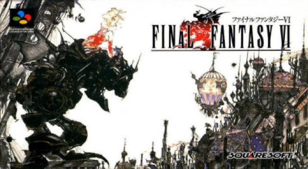

RPG · 1994
Final Fantasy VI
Fourteen protagonists and a villain who actually wins halfway through.

Cover: Wikipedia: Final Fantasy VI
Facts
- Released
- 1994-04-02
- Genre
- JRPG
- Category
- RPG
- Platforms
- Mobile, Nintendo, PC, PlayStation
- Developers
- Square
- Publishers
- Square